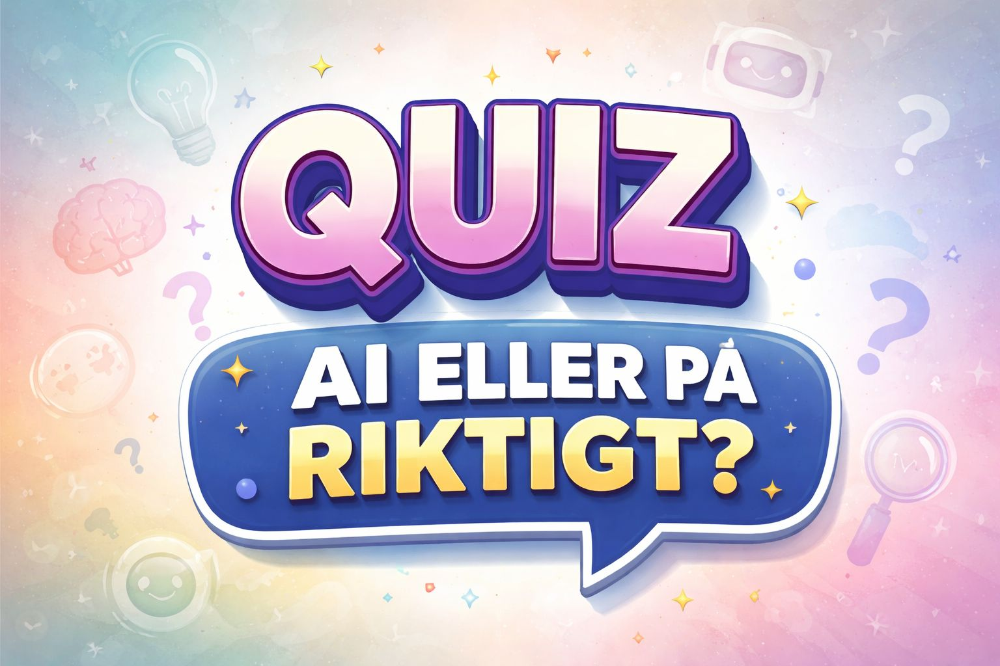

Ett spel om källkritik, AI och bluffar på nätet.
Välkommen till Tänk ett varv till!
Du får åtta frågor med tre svarsalternativ. Välj det svar du tycker är bäst.
Efter varje svar får du veta om det var rätt och läsa en förklaring. Du får en poäng för varje rätt svar.
Lycka till – och tänk som en detektiv!
🎉 Du har klarat quizet!
🔎 Så gör man
Nu tittar vi på hur man kollar om något är sant.
⭐ Kolla en butik på Google och Trustpilot
Sök på butikens namn.

Titta på stjärnorna. Hur många har skrivit?

Läs några dåliga omdömen.

🖼️ Sök med en bild
Ta bilden du vill kolla.

Gå till Google Bilder. Tryck på kameran.

Titta var bilden finns. Är den gammal?

💡 Kom ihåg
🕵️ Äkta eller AI?
Nu ska du själv gissa. Du får se videoklipp. Är de äkta, eller gjorda av AI?

Starta SVT:s quizQuizet öppnas i en ny flik. Stäng fliken när ni är klara, så kommer ni tillbaka hit.
Jämför flera nyhetskällor
Om du undrar om en nyhet stämmer kan du undersöka vad flera etablerade nyhetskällor skriver.
Tänk på att även etablerade källor kan behöva kompletteras med mer information.